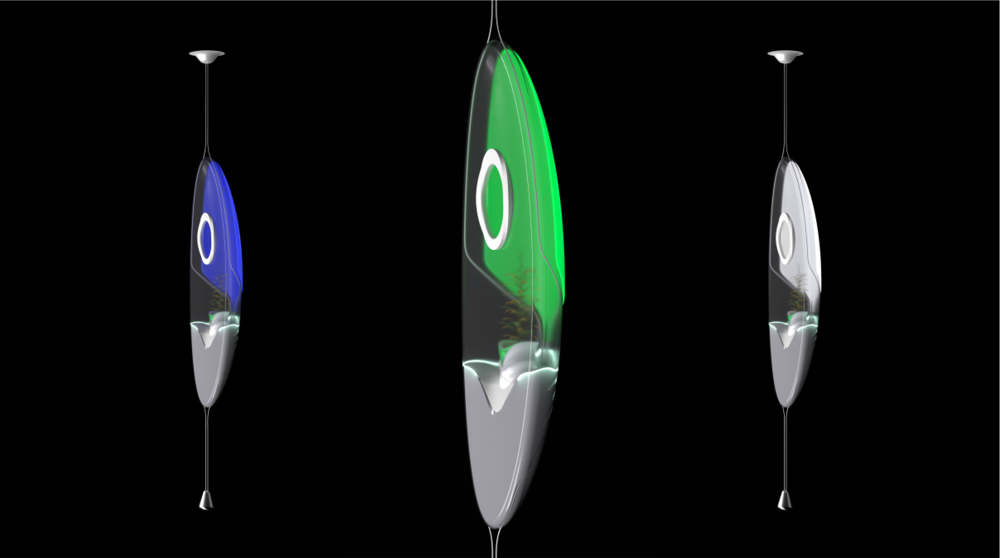
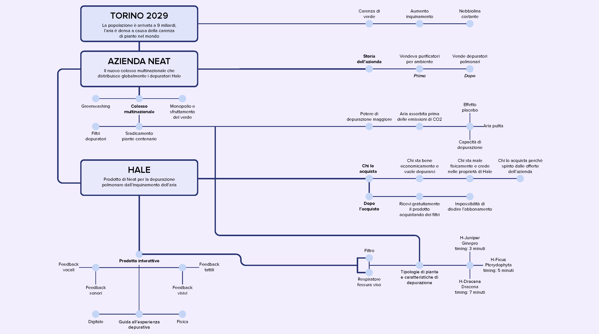
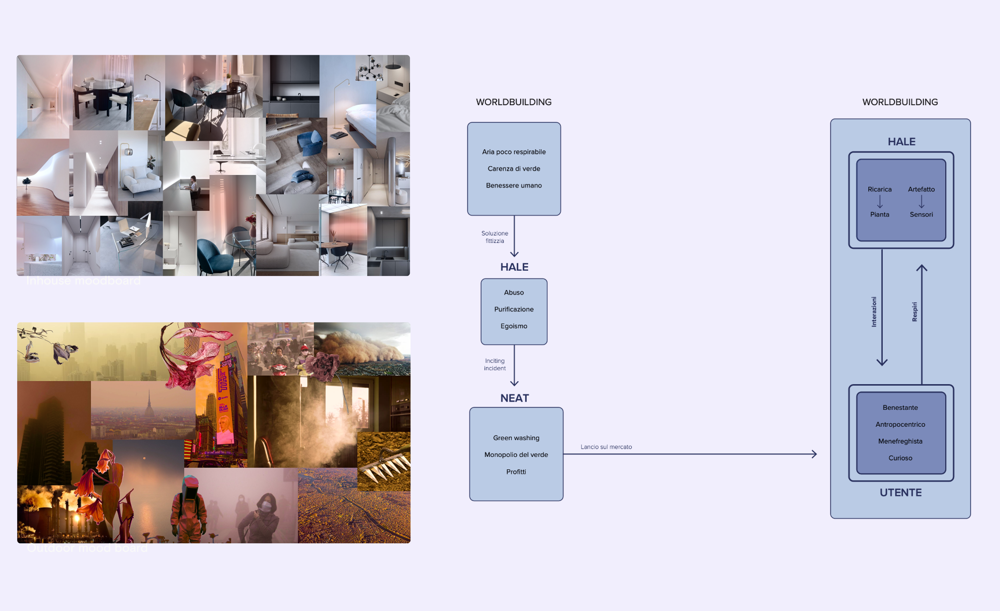
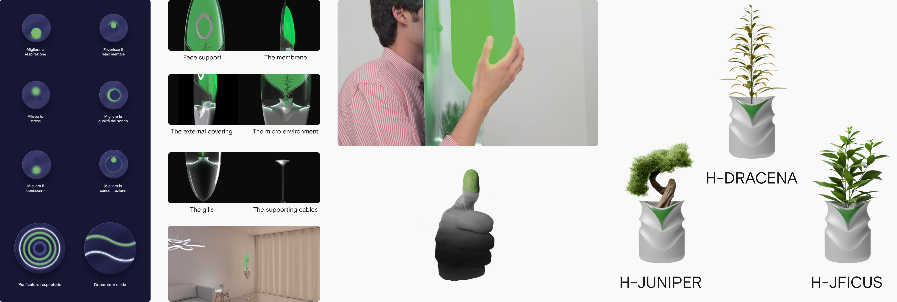
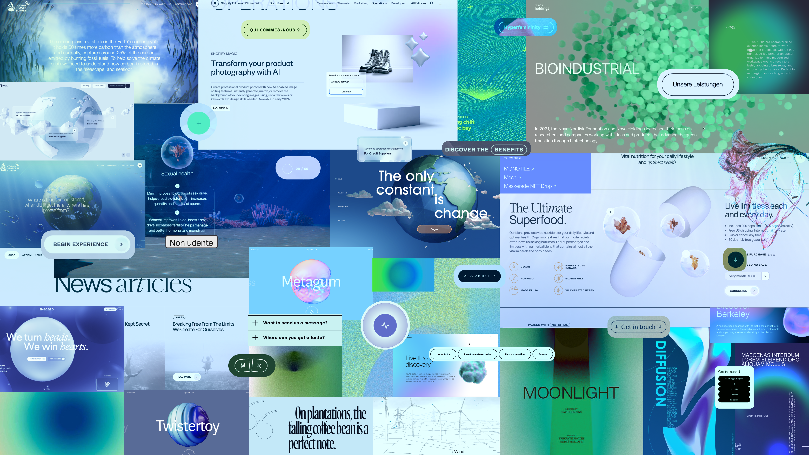
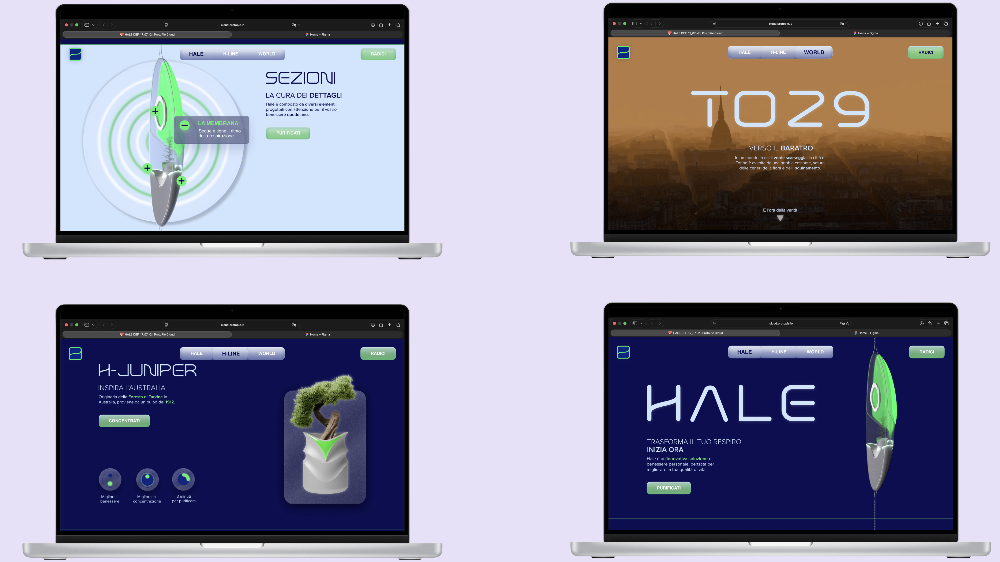

Speculative & Innovation Design · 2024
Hale—
A speculative world — Turin 2029
In 2029, in Turin, human well-being is prioritised over everything else, and pollution has reached alarming levels. Ignoring the planet's cries for help, nature is increasingly absent, and the air has become thick and unbreathable, with a foggy haze that makes it hard to see and breathe.
A multinational company, Neat, has monopolised the last green spaces and started producing personal air purifiers to prevent poisoning from fine dust and toxic gases. Neat markets Hale, a pulmonary purifier, as a personal and environmental purifier — but it actually has a placebo effect on people and spaces. It has become a status symbol, serving only as a decorative item.
The production of this device not only deceives consumers but also contributes to massive waste, ignoring the environmental disaster of our times. It exemplifies human blindness to a holistic vision that supports the survival of flora and fauna, influenced by anthropocentrism.

Section 01 · Worldbuilding & Research
A reddish fog. A few green spaces. A monopoly.
The project is grounded in an extensive worldbuilding exercise: a speculative scenario set in Turin 2029, where a reddish fog hangs in the air and people can no longer breathe freely. Forests have diminished, leaving only a few green spaces for the wealthy to compete over.
A survey on the relationship between humans and nature collected 216 responses, reflecting a wide range of opinions — from recognition of the importance of the human-nature connection to deep concern about the environmental crisis and biodiversity loss.
The research produced a Map of Artifacts and a detailed worldbuilding diagram, mapping the relationships between Torino 2029, Azienda Neat, the Hale product, and the end user — revealing the hidden manipulations embedded in the system.
Outdoor and indoor moodboards were developed to define the visual and spatial atmosphere of this speculative world: sterile, minimalist interiors contrasted with the polluted, saturated exterior landscape.


Section 02 · Product Design — Hale & H-Plants
A lung purifier with a placebo at its core.
Hale is a lung purifier designed to protect people from pollution. The 2029 innovation from Neat promises to purify users' lungs through a process based on inhalation and exhalation within a small, relaxing microcosm — featuring a special filter with powerful properties.
H-Plants are century-old plants, processed and treated in Neat's laboratories. Thanks to an innovative process, these plants absorb and release purified air via the Hale device, harnessing the regenerative power they have possessed for hundreds of years. Three variants exist: H-Juniper, H-Dracena, H-Ficus.
The heart of Hale is the filter — a capsule housing a Neat-treated plant. A central top groove ensures an ergonomic grip, enabling the 'H-Bud' experience: the thumb turns green, acting as a new status symbol and a reminder for purification.

Section 03 · Immersive Website & The Critique
Seduce first. Then reveal.
Set in Turin 2029, the immersive website invites users to explore a transformed future. Navigating as a Neat customer, the user discovers the era's most iconic lung purifier: Hale. The experience is designed to seduce before it reveals — drawing the user in with the language of luxury branding before exposing the product's hollowness.
A parallel critique website uses the same immersive language to raise awareness and educate the public in small, impactful doses — critiquing societal indifference to the environmental crisis through the very tools of the brand it dismantles.
The project also includes a short video set in Turin 2029: a protagonist boasts of having a 'green thumb' whilst ignoring the discarded plant. The final cough confirms Hale's futility.

